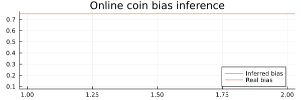
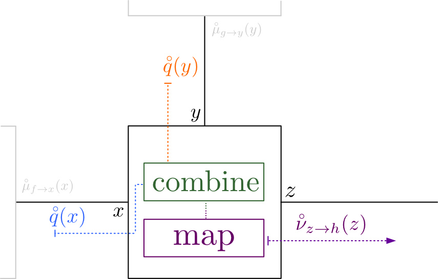
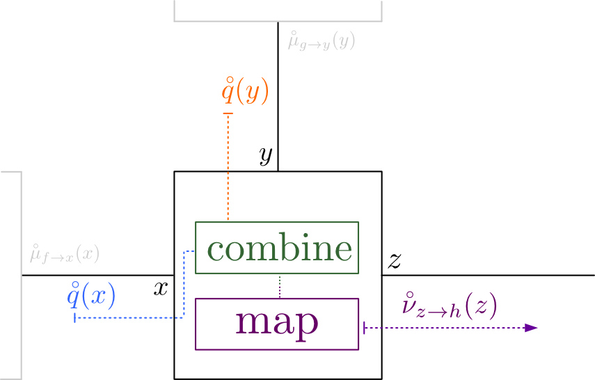

This example has been auto-generated from the examples/ folder at GitHub repository.
Advanced Tutorial
# Activate local environment, see `Project.toml`
import Pkg; Pkg.activate(".."); Pkg.instantiate();using RxInfer, PlotsThis notebook covers the fundamentals and advanced usage of the RxInfer.jl package.
This tutorial is also available in the documentation.
General model specification syntax
We use the @model macro from the RxInfer.jl package to create a probabilistic model $p(s, y)$ and we also specify extra constraints on the variational family of distributions $\mathcal{Q}$, used for approximating intractable posterior distributions. Below there is a simple example of the general syntax for model specification. In this tutorial we do not cover all possible ways to create models or advanced features of RxInfer.jl. Instead we refer the interested reader to the documentation for a more rigorous explanation and illustrative examples.
# the `@model` macro accepts a regular Julia function
@model function test_model1(s_mean, s_precision)
# We use the `randomvar` function to create
# a random variable in our model
s = randomvar()
# the `tilde` operator creates a functional dependency
# between variables in our model and can be read as
# `sampled from` or `is modeled by`
s ~ Normal(mean = s_mean, precision = s_precision)
# We use the `datavar` function to create
# observed data variables in our models
# We also need to specify the type of our data
# In this example it is `Float64`
y = datavar(Float64)
y ~ Normal(mean = s, precision = 1.0)
# It is possible to return something from the model specification (including variables and nodes)
return "Hello world"
endThe @model macro creates a function with the same name and with the same set of input arguments as the original function (test_model1(s_mean, s_precision) in this example). The return value is modified in such a way to contain a reference to the model object as the first value and to the user specified variables in the form of a tuple as the second value.
modelgenerator = test_model1(0.0, 1.0)
model, returnval = create_model(modelgenerator)(FactorGraphModel(), "Hello world")The benefits of using model generator as a way to create a model is that it allows to change inference constraints and meta specification for nodes. We will talk about factorisation and form constraints and meta specification later on in this demo.
RxInfer.jl returns a factor graph-based representation of a model. We can examine this factor graph structure with the help of some utility functions such as:
getnodes(): returns an array of factor nodes in a corresponding factor graphgetrandom(): returns an array of random variables in the modelgetdata(): returns an array of data inputs in the modelgetconstant(): returns an array of constant values in the model
getnodes(model)FactorNodesCollection(nodes: 2)getrandom(model) .|> name1-element Vector{Symbol}:
:sgetdata(model) .|> name1-element Vector{Symbol}:
:ygetconstant(model) .|> getconst3-element Vector{Float64}:
0.0
1.0
1.0It is also possible to use control flow statements such as if or for blocks in the model specification function. In general, any valid snippet of Julia code can be used inside the @model block. As an example consider the following (valid!) model:
@model function test_model2(n)
if n <= 1
error("`n` argument must be greater than one.")
end
# `randomvar(n)` creates a dense sequence of
# random variables
s = randomvar(n)
# `datavar(Float64, n)` creates a dense sequence of
# observed data variables of type `Float64`
y = datavar(Float64, n)
s[1] ~ Normal(mean = 0.0, precision = 0.1)
y[1] ~ Normal(mean = s[1], precision = 1.0)
for i in 2:n
s[i] ~ Normal(mean = s[i - 1], precision = 1.0)
y[i] ~ Normal(mean = s[i], precision = 1.0)
end
endmodel, _ = create_model(test_model2(10));# An amount of factor nodes in generated Factor Graph
getnodes(model) |> length20# An amount of random variables
getrandom(model) |> length10# An amount of data inputs
getdata(model) |> length10# An amount of constant values
getconstant(model) |> length21It is also possible to use complex expressions inside the functional dependency expressions
y ~ NormalMeanPrecision(2.0 * (s + 1.0), 1.0)The ~ operator automatically creates a random variable if none was created before with the same name and throws an error if this name already exists
# s = randomvar() here is optional
# `~` creates random variables automatically
s ~ NormalMeanPrecision(0.0, 1.0)An example model which will throw an error:
@model function error_model1()
s = 1.0
s ~ NormalMeanPrecision(0.0, 1.0)
endBy default the RxInfer.jl package creates new references for constants (literals like 0.0 or 1.0) in a model. In some situations this may not be efficient, especially when these constants represent large matrices. RxInfer.jl will by default create new copies of some constant (e.g. matrix) in a model every time it uses it. However it is possible to use constvar() function to create and reuse similar constants in the model specification syntax as
# Creates constant reference in a model with a prespecified value
c = constvar(0.0)An example:
@model function test_model5(dim::Int, n::Int, A::Matrix, P::Matrix, Q::Matrix)
s = randomvar(n)
y = datavar(Vector{Float64}, n)
# Here we create constant references
# for constant matrices in our model
# to make inference more memory efficient
cA = constvar(A)
cP = constvar(P)
cQ = constvar(Q)
s[1] ~ MvNormal(mean = zeros(dim), covariance = cP)
y[1] ~ MvNormal(mean = s[1], covariance = cQ)
for i in 2:n
s[i] ~ MvNormal(mean = cA * s[i - 1], covariance = cP)
y[i] ~ MvNormal(mean = s[i], covariance = cQ)
end
endThe ~ expression can also return a reference to a newly created node in a corresponding factor graph for convenience in later usage:
@model function test_model()
# In this example `ynode` refers to the corresponding
# `GaussianMeanVariance` node created in the factor graph
ynode, y ~ GaussianMeanVariance(0.0, 1.0)
return ynode, y
endProbabilistic inference in RxInfer.jl
RxInfer.jl uses the Rocket.jl package API for inference routines. Rocket.jl is a reactive programming extension for Julia that is higly inspired by RxJS and similar libraries from the Rx ecosystem. It consists of observables, actors, subscriptions and operators. For more information and rigorous examples see Rocket.jl github page.
Observables
Observables are lazy push-based collections and they deliver their values over time.
# Timer that emits a new value every second and has an initial one second delay
observable = timer(300, 300)TimerObservable(300, 300)A subscription allows us to subscribe on future values of some observable, and actors specify what to do with these new values:
actor = (value) -> println(value)
subscription1 = subscribe!(observable, actor)TimerSubscription()# We always need to unsubscribe from some observables
unsubscribe!(subscription1)# We can modify our observables
modified = observable |> filter(d -> rem(d, 2) === 1) |> map(Int, d -> d ^ 2)ProxyObservable(Int64, MapProxy(Int64))subscription2 = subscribe!(modified, (value) -> println(value))TimerSubscription()unsubscribe!(subscription2)@model function coin_toss_model(n)
# `datavar` creates data 'inputs' in our model
# We will pass data later on to these inputs
# In this example we create a sequence of inputs that accepts Float64
y = datavar(Float64, n)
# We endow θ parameter of our model with some prior
θ ~ Beta(2.0, 7.0)
# We assume that the outcome of each coin flip
# is modeled by a Bernoulli distribution
for i in 1:n
y[i] ~ Bernoulli(θ)
end
# We return references to our data inputs and θ parameter
# We will use these references later on during the inference step
return y, θ
endWe can call the inference function to run inference in such model:
p = 0.75 # Bias of a coin
dataset = float.(rand(Bernoulli(p), 500));
result = infer(
model = coin_toss_model(length(dataset)),
data = (y = dataset, )
)
println("Inferred bias: ", mean_var(result.posteriors[:θ]))Inferred bias: (0.7190569744597249, 0.00039610596458931646)We can see that the inferred bias is quite close to the actual value we used in the dataset generation.
The RxInfer.jl package's API is more flexible (and reactive!) and can return posterior marginal distributions in our specified model in the form of an observable. It is possible to subscribe on its future updates, but for convenience RxInfer.jl only caches the last obtained values of all marginals in a model. To get a reference for the posterior marginal of some random variable in a model RxInfer.jl exports two functions:
getmarginal(x): for a single random variablexgetmarginals(xs): for a dense sequence of random variablessx
Let's see how it works in practice. Here we create a simple coin toss model. We assume that observations are governed by the Bernoulli distribution with unknown bias parameter θ. To have a fully Bayesian treatment of this problem we endow θ with the Beta prior.
_, (y, θ) = create_model(coin_toss_model(length(dataset)));# As soon as we have a new value for the marginal posterior over the `θ` variable
# we simply print the first two statistics of it
θ_subscription = subscribe!(getmarginal(θ), (marginal) -> println("New update: mean(θ) = ", mean(marginal), ", std(θ) = ", std(marginal)));To pass data to our model we use update! function
update!(y, dataset)New update: mean(θ) = 0.7190569744597249, std(θ) = 0.019902411024529578# It is necessary to always unsubscribe from running observables
unsubscribe!(θ_subscription)# The ReactiveMP.jl inference backend is lazy and does not compute posterior marginals if no-one is listening for them
# At this moment we have already unsubscribed from the new posterior updates so this `update!` does nothing
update!(y, dataset)Rocket.jl provides some useful built-in actors for obtaining posterior marginals especially with static datasets.
# the `keep` actor simply keeps all incoming updates in an internal storage, ordered
θvalues = keep(Marginal)KeepActor{Marginal}(Marginal[])# `getmarginal` always emits last cached value as its first value
subscribe!(getmarginal(θ) |> take(1), θvalues);getvalues(θvalues)1-element Vector{Marginal}:
Marginal(Beta{Float64}(α=366.0, β=143.0))subscribe!(getmarginal(θ) |> take(1), θvalues);getvalues(θvalues)2-element Vector{Marginal}:
Marginal(Beta{Float64}(α=366.0, β=143.0))
Marginal(Beta{Float64}(α=366.0, β=143.0))# the `buffer` actor keeps very last incoming update in an internal storage and can also store
# an array of updates for a sequence of random variables
θbuffer = buffer(Marginal, 1)BufferActor{Marginal, Vector{Marginal}}(Marginal[#undef])subscribe!(getmarginals([ θ ]) |> take(1), θbuffer);getvalues(θbuffer)1-element Vector{Marginal}:
Marginal(Beta{Float64}(α=366.0, β=143.0))subscribe!(getmarginals([ θ ]) |> take(1), θbuffer);getvalues(θbuffer)1-element Vector{Marginal}:
Marginal(Beta{Float64}(α=366.0, β=143.0))Reactive Online Inference
RxInfer.jl naturally supports reactive streams of data and it is possible to run reactive inference with some external datasource.
@model function online_coin_toss_model()
# We create datavars for the prior
# over `θ` variable
θ_a = datavar(Float64)
θ_b = datavar(Float64)
θ ~ Beta(θ_a, θ_b)
y = datavar(Float64)
y ~ Bernoulli(θ)
endautoupdates = @autoupdates begin
θ_a, θ_b = params(q(θ))
end(θ_a,θ_b = params(q(θ)),)rxresult = infer(
model = online_coin_toss_model(),
data = (y = dataset, ),
autoupdates = autoupdates,
historyvars = (θ = KeepLast(), ),
keephistory = length(dataset),
initmarginals = (
θ = vague(Beta),
),
autostart = true
);animation = @animate for i in 1:length(dataset)
plot(mean.(rxresult.history[:θ][1:i]), ribbon = std.(rxresult.history[:θ][1:i]), title = "Online coin bias inference", label = "Inferred bias", legend = :bottomright)
hline!([ p ], label = "Real bias", size = (600, 200))
end
gif(animation, "../pics/online-coin-bias-inference.gif", fps = 24, show_msg = false);
In this example we used static dataset and the history field of the reactive inference result, but the rxinference function also supports any real-time reactive stream and can run indefinitely.
That was an example of exact Bayesian inference with Sum-Product (or Belief Propagation) algorithm. However, RxInfer is not limited to only the sum-product algorithm but it also supports variational message passing with Constrained Bethe Free Energy Minimisation.
Variational inference
On a very high-level, ReactiveMP.jl is aimed to solve the Constrained Bethe Free Energy minimisation problem. For this task we approximate our exact posterior marginal distribution by some family of distributions $q \in \mathcal{Q}$. Often this involves assuming some factorization over $q$. For this purpose the @model macro supports optional where { ... } clauses for every ~ expression in a model specification.
@model function test_model6_with_manual_constraints(n)
τ ~ Gamma(shape = 1.0, rate = 1.0)
μ ~ Normal(mean = 0.0, variance = 100.0)
y = datavar(Float64, n)
for i in 1:n
# Here we assume a mean-field assumption on our
# variational family of distributions locally for the current node
y[i] ~ Normal(mean = μ, precision = τ) where { q = q(y[i])q(μ)q(τ) }
end
endIn this example we specified an extra constraints for $q_a$ for Bethe factorisation:
\[\begin{aligned} q(s) = \prod_{a \in \mathcal{V}} q_a(s_a) \prod_{i \in \mathcal{E}} q_i^{-1}(s_i) \end{aligned}\]
There are several options to specify the mean-field factorisation constraint.
y[i] ~ NormalMeanPrecision(μ, τ) where { q = q(y[i])q(μ)q(τ) } # With names from model specification
y[i] ~ NormalMeanPrecision(μ, τ) where { q = q(out)q(mean)q(precision) } # With names from node specification
y[i] ~ NormalMeanPrecision(μ, τ) where { q = MeanField() } # With alias nameIt is also possible to use local structured factorisation:
y[i] ~ NormalMeanPrecision(μ, τ) where { q = q(y[i], μ)q(τ) } # With names from model specification
y[i] ~ NormalMeanPrecision(μ, τ) where { q = q(out, mean)q(precision) } # With names from node specificationRxInfer.jl constraints macro
RxInfer.jl package exports @constraints macro to simplify factorisation and form constraints specification. Read more about @constraints macro in the corresponding documentation section, here we show a simple example of the same factorisation constraints specification, but with @constraints macro:
constraints6 = @constraints begin
q(μ, τ) = q(μ)q(τ) # Mean-Field over `μ` and `τ`
endConstraints:
marginals form:
messages form:
factorisation:
q(μ, τ) = q(μ)q(τ)
Options:
warn = trueNote: where blocks have higher priority over constraints specification
@model function test_model6(n)
τ ~ Gamma(shape = 1.0, rate = 1.0)
μ ~ Normal(mean = 0.0, variance = 100.0)
y = datavar(Float64, n)
for i in 1:n
# Here we assume a mean-field assumption on our
# variational family of distributions locally for the current node
y[i] ~ Normal(mean = μ, precision = τ)
end
return μ, τ, y
endInference
To run inference in this model we again need to create a synthetic dataset:
dataset = rand(Normal(-3.0, inv(sqrt(5.0))), 1000);inference function
In order to simplify model and inference testing, RxInfer.jl exports pre-written inference function, that is aimed for simple use cases with static datasets:
Use ?inference to quickly check the documentation for the inference function.
result = infer(
model = test_model6(length(dataset)),
data = (y = dataset, ),
constraints = constraints6,
initmarginals = (μ = vague(NormalMeanPrecision), τ = vague(GammaShapeRate)),
returnvars = (μ = KeepLast(), τ = KeepLast()),
iterations = 10,
free_energy = true,
showprogress = true
)Inference results:
Posteriors | available for (μ, τ)
Free Energy: | Real[14763.3, 3275.44, 661.928, 620.989, 620.989, 620.
989, 620.989, 620.989, 620.989, 620.989]println("μ: mean = ", mean(result.posteriors[:μ]), ", std = ", std(result.posteriors[:μ]))μ: mean = -2.987502277051174, std = 0.014129186703084842println("τ: mean = ", mean(result.posteriors[:τ]), ", std = ", std(result.posteriors[:τ]))τ: mean = 5.009158860559135, std = 0.22379271351719524Manual inference
For advanced use cases it is advised to write inference functions manually as it provides more flexibility, here is an example of manual inference specification:
model, (μ, τ, y) = create_model(test_model6(length(dataset)), constraints = constraints6);For variational inference we also usually need to set initial marginals for our inference procedure. For that purpose ReactiveMP inference engine export the setmarginal! function:
setmarginal!(μ, vague(NormalMeanPrecision))
setmarginal!(τ, vague(GammaShapeRate))μ_values = keep(Marginal)
τ_values = keep(Marginal)
μ_subscription = subscribe!(getmarginal(μ), μ_values)
τ_subscription = subscribe!(getmarginal(τ), τ_values)
for i in 1:10
update!(y, dataset)
endgetvalues(μ_values)10-element Vector{Marginal}:
Marginal(NormalWeightedMeanPrecision{Float64}(xi=-2.9934832575858617e-9, w
=0.010000001002000566))
Marginal(NormalWeightedMeanPrecision{Float64}(xi=-27.431683845243654, w=9.
192128259120526))
Marginal(NormalWeightedMeanPrecision{Float64}(xi=-9699.160028344495, w=324
6.5818068355907))
Marginal(NormalWeightedMeanPrecision{Float64}(xi=-14956.79946900905, w=500
6.4562628384865))
Marginal(NormalWeightedMeanPrecision{Float64}(xi=-14964.895284973454, w=50
09.166151920256))
Marginal(NormalWeightedMeanPrecision{Float64}(xi=-14964.903368978448, w=50
09.168857855883))
Marginal(NormalWeightedMeanPrecision{Float64}(xi=-14964.903377046301, w=50
09.168860556452))
Marginal(NormalWeightedMeanPrecision{Float64}(xi=-14964.903377054363, w=50
09.168860559176))
Marginal(NormalWeightedMeanPrecision{Float64}(xi=-14964.903377054372, w=50
09.168860559176))
Marginal(NormalWeightedMeanPrecision{Float64}(xi=-14964.903377054374, w=50
09.168860559176))getvalues(τ_values)10-element Vector{Marginal}:
Marginal(GammaShapeRate{Float64}(a=501.0, b=5.00000000004563e14))
Marginal(GammaShapeRate{Float64}(a=501.0, b=54562.51381615817))
Marginal(GammaShapeRate{Float64}(a=501.0, b=154.31662375221794))
Marginal(GammaShapeRate{Float64}(a=501.0, b=100.07098322792153))
Marginal(GammaShapeRate{Float64}(a=501.0, b=100.01684611248133))
Marginal(GammaShapeRate{Float64}(a=501.0, b=100.01679208362043))
Marginal(GammaShapeRate{Float64}(a=501.0, b=100.0167920296996))
Marginal(GammaShapeRate{Float64}(a=501.0, b=100.01679202964581))
Marginal(GammaShapeRate{Float64}(a=501.0, b=100.01679202964571))
Marginal(GammaShapeRate{Float64}(a=501.0, b=100.01679202964569))println("μ: mean = ", mean(last(μ_values)), ", std = ", std(last(μ_values)))μ: mean = -2.987502277051174, std = 0.014129186703084842println("τ: mean = ", mean(last(τ_values)), ", std = ", std(last(τ_values)))τ: mean = 5.009158860559135, std = 0.22379271351719524Form constraints
In order to support form constraints, the randomvar() function also supports a where { ... } clause with some optional arguments. One of these arguments is form_constraint that allows us to specify a form constraint to the random variables in our model. Another one is prod_constraint that allows to specify an additional constraints during computation of product of two colliding messages. For example we can perform the EM algorithm if we assign a point mass contraint on some variables in our model.
<img style="display: block; margin-left: auto; margin-right: auto; width: 50%;" src="./pics/posterior.png" />
@model function test_model7_with_manual_constraints(n)
τ ~ Gamma(shape = 1.0, rate = 1.0)
# In case of form constraints `randomvar()` call is necessary
μ = randomvar() where { marginal_form_constraint = PointMassFormConstraint() }
μ ~ Normal(mean = 0.0, variance = 100.0)
y = datavar(Float64, n)
for i in 1:n
y[i] ~ Normal(mean = μ, precision = τ) where { q = q(y[i])q(μ)q(τ) }
end
return μ, τ, y
endAs in the previous example we can use @constraints macro to achieve the same goal with a nicer syntax:
constraints7 = @constraints begin
q(μ) :: PointMass
q(μ, τ) = q(μ)q(τ) # Mean-Field over `μ` and `τ`
endConstraints:
marginals form:
q(μ) :: PointMassFormConstraint() [ prod_constraint = GenericProd() ]
messages form:
factorisation:
q(μ, τ) = q(μ)q(τ)
Options:
warn = trueIn this example we specified an extra constraints for $q_i$ for Bethe factorisation:
\[\begin{aligned} q(s) = \prod_{a \in \mathcal{V}} q_a(s_a) \prod_{i \in \mathcal{E}} q_i^{-1}(s_i) \end{aligned}\]
@model function test_model7(n)
τ ~ Gamma(shape = 1.0, rate = 1.0)
# In case of form constraints `randomvar()` call is necessary
μ = randomvar()
μ ~ Normal(mean = 0.0, variance = 100.0)
y = datavar(Float64, n)
for i in 1:n
y[i] ~ Normal(mean = μ, precision = τ)
end
return μ, τ, y
endmodel, (μ, τ, y) = create_model(test_model7(length(dataset)), constraints = constraints7);setmarginal!(μ, vague(NormalMeanPrecision))
setmarginal!(τ, PointMass(1.0))
μ_values = keep(Marginal)
τ_values = keep(Marginal)
μ_subscription = subscribe!(getmarginal(μ), μ_values)
τ_subscription = subscribe!(getmarginal(τ), τ_values)
for i in 1:10
update!(y, dataset)
endgetvalues(μ_values) |> lastMarginal(PointMass{Float64}(-2.9875022830033893))getvalues(τ_values) |> lastMarginal(GammaShapeRate{Float64}(a=501.0, b=99.91697507116479))By default RxInfer tries to compute an analytical product of two colliding messages and throws an error if no analytical solution is known. However, it is possible to fall back to a generic product that does not require an analytical solution to be known. In this case the inference backend will simply propagate the product of two messages in a form of a tuple. It is not possible to use such a tuple-product during an inference and in this case it is mandatory to use some form constraint to approximate this product.
μ = randomvar() where {
prod_constraint = ProdGeneric(),
form_constraint = SampleListFormConstraint()
}Sometimes it is useful to preserve a specific parametrisation of the resulting product later on in an inference procedure. The ReactiveMP inference engine exports a special prod_constraint called ProdPreserveType especially for that purpose:
μ = randomvar() where { prod_constraint = ProdPreserveType(NormalWeightedMeanPrecision) }Note: @constraints macro specifies required prod_constraint automatically.
Free Energy
During variational inference the RxInfer optimises a special functional called the Bethe Free Energy functional. It is possible to obtain its values for all VMP iterations with the score function.
model, (μ, τ, y) = create_model(test_model6(length(dataset)), constraints = constraints6);bfe_observable = score(model, Float64, BetheFreeEnergy())ProxyObservable(Float64, ErrorIfProxy())bfe_subscription = subscribe!(bfe_observable, (fe) -> println("Current BFE value: ", fe));# Reset the model with vague marginals
setmarginal!(μ, vague(NormalMeanPrecision))
setmarginal!(τ, vague(GammaShapeRate))
for i in 1:10
update!(y, dataset)
endCurrent BFE value: 633.4988094912314
Current BFE value: 620.9891837619302
Current BFE value: 620.989183513007
Current BFE value: 620.9891835130079
Current BFE value: 620.9891835130074
Current BFE value: 620.9891835130138
Current BFE value: 620.9891835130138
Current BFE value: 620.9891835130134
Current BFE value: 620.9891835130134
Current BFE value: 620.9891835130134# It always necessary to unsubscribe and release computer resources
unsubscribe!([ μ_subscription, τ_subscription, bfe_subscription ])Meta data specification
During model specification some functional dependencies may accept an optional meta object in the where { ... } clause. The purpose of the meta object is to adjust, modify or supply some extra information to the inference backend during the computations of the messages. The meta object for example may contain an approximation method that needs to be used during various approximations or it may specify the tradeoff between accuracy and performance:
# In this example the `meta` object for the autoregressive `AR` node specifies the variate type of
# the autoregressive process and its order. In addition it specifies that the message computation rules should
# respect accuracy over speed with the `ARsafe()` strategy. In contrast, `ARunsafe()` strategy tries to speedup computations
# by cost of possible numerical instabilities during an inference procedure
s[i] ~ AR(s[i - 1], θ, γ) where { q = q(s[i - 1], s[i])q(θ)q(γ), meta = ARMeta(Multivariate, order, ARsafe()) }
...
s[i] ~ AR(s[i - 1], θ, γ) where { q = q(s[i - 1], s[i])q(θ)q(γ), meta = ARMeta(Univariate, order, ARunsafe()) }Another example with GaussianControlledVariance, or simply GCV [see Hierarchical Gaussian Filter], node:
# In this example we specify structured factorisation and flag meta with `GaussHermiteCubature`
# method with `21` sigma points for approximation of non-lineariety between hierarchy layers
xt ~ GCV(xt_min, zt, real_k, real_w) where { q = q(xt, xt_min)q(zt)q(κ)q(ω), meta = GCVMetadata(GaussHermiteCubature(21)) }The Meta object is useful to pass any extra information to a node that is not a random variable or constant model variable. It may include extra approximation methods, differentiation methods, optional non-linear functions, extra inference parameters etc.
RxInfer.jl @meta macro
Users can use @meta macro from the RxInfer.jl package to achieve the same goal. Read more about @meta macro in the corresponding documentation section. Here is a simple example of the same meta specification:
@meta begin
AR(s, θ, γ) -> ARMeta(Multivariate, 5, ARsafe())
endMeta specification:
AR(s, θ, γ) -> ARMeta{Multivariate, ARsafe}(5, ARsafe())
Options:
warn = trueCreating custom nodes and message computation rules
Custom nodes
To create a custom functional form and to make it available during model specification the ReactiveMP inference engine exports the @node macro:
# `@node` macro accepts a name of the functional form, its type, either `Stochastic` or `Deterministic` and an array of interfaces:
@node NormalMeanVariance Stochastic [ out, μ, v ]
# Interfaces may have aliases for their names that might be convenient for factorisation constraints specification
@node NormalMeanVariance Stochastic [ out, (μ, aliases = [ mean ]), (v, aliases = [ var ]) ]
# `NormalMeanVariance` structure declaration must exist, otherwise `@node` macro will throw an error
struct NormalMeanVariance end
@node NormalMeanVariance Stochastic [ out, μ, v ]
# It is also possible to use function objects as a node functional form
function dot end
# Syntax for functions is a bit differet, as it is necesssary to use `typeof(...)` function for them
# out = dot(x, a)
@node typeof(dot) Deterministic [ out, x, a ]Note: Deterministic nodes do not support factorisation constraints with the where { q = ... } clause.
After that it is possible to use the newly created node during model specification:
@model function test_model()
...
y ~ dot(x, a)
...
endCustom messages computation rules
RxInfer.jl exports the @rule macro to create custom message computation rules. For example let us create a simple + node to be available for usage in the model specification usage. We refer to A Factor Graph Approach to Signal Modelling , System Identification and Filtering [ Sascha Korl, 2005, page 32 ] for a rigorous explanation of the + node in factor graphs. According to Korl, assuming that inputs are Gaussian Sum-Product message computation rule for + node is the following:
\[\begin{aligned} \mu_z = \mu_x + \mu_y\\ V_z = V_x + V_y \end{aligned}\]
To specify this in RxInfer.jl we use the @node and @rule macros:
@node typeof(+) Deterministic [ z, x, y ]
@rule typeof(+)(:z, Marginalisation) (m_x::UnivariateNormalDistributionsFamily, m_y::UnivariateNormalDistributionsFamily) = begin
x_mean, x_var = mean_var(m_x)
y_mean, y_var = mean_var(m_y)
return NormalMeanVariance(x_mean + y_mean, x_var + y_var)
endIn this example, for the @rule macro, we specify a type of our functional form: typeof(+). Next, we specify an edge we are going to compute an outbound message for. Marginalisation indicates that the corresponding message respects the marginalisation constraint for posterior over corresponding edge:
\[\begin{aligned} q(z) = \int q(z, x, y) \mathrm{d}x\mathrm{d}y \end{aligned}\]
If we look on difference between sum-product rules and variational rules with mean-field assumption we notice that they require different local information to compute an outgoing message:
 

\[\begin{aligned} \mu(z) = \int f(x, y, z)\mu(x)\mu(y)\mathrm{d}x\mathrm{d}y \end{aligned}\]
\[\begin{aligned} \nu(z) = \exp{ \int \log f(x, y, z)q(x)q(y)\mathrm{d}x\mathrm{d}y } \end{aligned}\]
The @rule macro supports both cases with special prefixes during rule specification:
m_prefix corresponds to the incoming message on a specific edgeq_prefix corresponds to the posterior marginal of a specific edge
Example of a Sum-Product rule with m_ messages used:
@rule NormalMeanPrecision(:μ, Marginalisation) (m_out::UnivariateNormalDistributionsFamily, m_τ::PointMass) = begin
m_out_mean, m_out_cov = mean_cov(m_out)
return NormalMeanPrecision(m_out_mean, inv(m_out_cov + inv(mean(m_τ))))
endExample of a Variational rule with Mean-Field assumption with q_ posteriors used:
@rule NormalMeanPrecision(:μ, Marginalisation) (q_out::Any, q_τ::Any) = begin
return NormalMeanPrecision(mean(q_out), mean(q_τ))
endRxInfer.jl also supports structured rules. It is possible to obtain joint marginal over a set of edges:
@rule NormalMeanPrecision(:τ, Marginalisation) (q_out_μ::Any, ) = begin
m, V = mean_cov(q_out_μ)
θ = 2 / (V[1,1] - V[1,2] - V[2,1] + V[2,2] + abs2(m[1] - m[2]))
α = convert(typeof(θ), 1.5)
return Gamma(α, θ)
endNOTE: In the @rule specification the messages or marginals arguments must be in order with interfaces specification from @node macro:
# Inference backend expects arguments in `@rule` macro to be in the same order
@node NormalMeanPrecision Stochastic [ out, μ, τ ]Any rule always has access to the meta information with hidden the meta::Any variable:
@rule MyCustomNode(:out, Marginalisation) (m_in1::Any, m_in2::Any) = begin
...
println(meta)
...
endIt is also possible to dispatch on a specific type of a meta object:
@rule MyCustomNode(:out, Marginalisation) (m_in1::Any, m_in2::Any, meta::LaplaceApproximation) = begin
...
endor
@rule MyCustomNode(:out, Marginalisation) (m_in1::Any, m_in2::Any, meta::GaussHermiteCubature) = begin
...
endCustomizing messages computational pipeline
In certain situations it might be convenient to customize the default message computational pipeline. RxInfer.jl supports the pipeline keyword in the where { ... } clause to add some extra steps after a message has been computed. A use case might be an extra approximation method to preserve conjugacy in the model, debugging or simple printing.
<img style="display: block; margin-left: auto; margin-right: auto; width: 30%;" src="./pics/pipeline.png" width="20%" />
# Logs all outbound messages
y[i] ~ NormalMeanPrecision(x[i], 1.0) where { pipeline = LoggerPipelineStage() }
# Initialise messages to be vague
y[i] ~ NormalMeanPrecision(x[i], 1.0) where { pipeline = InitVaguePipelineStage() }
# In principle, it is possible to approximate outbound messages with Laplace Approximation
y[i] ~ NormalMeanPrecision(x[i], 1.0) where { pipeline = LaplaceApproximation() }Let us return to the coin toss model, but this time we want to print flowing messages:
@model function coin_toss_model_log(n)
y = datavar(Float64, n)
θ ~ Beta(2.0, 7.0) where { pipeline = LoggerPipelineStage("θ") }
for i in 1:n
y[i] ~ Bernoulli(θ) where { pipeline = LoggerPipelineStage("y[$i]") }
end
return y, θ
end_, (y, θ) = RxInfer.create_model(coin_toss_model_log(5));θ_subscription = subscribe!(getmarginal(θ), (value) -> println("New posterior marginal for θ: ", value));[θ][Beta][out]: VariationalMessage()coinflips = float.(rand(Bernoulli(0.5), 5));update!(y, coinflips)[y[1]][Bernoulli][p]: VariationalMessage()
[y[2]][Bernoulli][p]: VariationalMessage()
[y[3]][Bernoulli][p]: VariationalMessage()
[y[4]][Bernoulli][p]: VariationalMessage()
[y[5]][Bernoulli][p]: VariationalMessage()
New posterior marginal for θ: Marginal(Beta{Float64}(α=4.0, β=10.0))unsubscribe!(θ_subscription)# Inference is lazy and does not send messages if no one is listening for them
update!(y, coinflips)